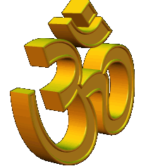

स्वास्थ्य संबंधी चिंताओं, धन की बाधाओं, व्यापार, नौकरी, संतान, प्रेम और गृहस्थ जीवन की समस्याओं या किसी विशेष इच्छा के लिए व्यक्तिगत आध्यात्मिक मार्गदर्शन प्राप्त करें।
₹5,000
एक बार का परामर्श शुल्क — गैर-वापसी योग्य (Non-refundable)
परामर्श में आपकी समस्या पर विचार, मन्त्र-जाप का तरीका और साधना संबंधी मार्गदर्शन शामिल है। मन्त्र दीक्षा अनिवार्य नहीं है; इच्छुक व्यक्ति के अनुरोध पर उपलब्ध है।
भुगतान करने से पहले सेवा और शुल्क की शर्तें समझ लें।
इस मार्गदर्शन के लिए कुण्डली बनवाना या ग्रह-दोष की जाँच कराना आवश्यक नहीं है।
आपकी परिस्थिति और आवश्यकता के अनुसार व्यक्तिगत मार्गदर्शन।
निर्धारित मन्त्र-जाप अनिवार्य है। इसे रात 10 बजे के बाद करना होगा।
मन्त्र दीक्षा वैकल्पिक है और अनुरोध पर उपलब्ध है।
कोई कठिन नियम या बड़ा अनुष्ठान इस मार्गदर्शन का अनिवार्य हिस्सा नहीं है; निर्धारित मन्त्र-जाप करना आवश्यक है।
नियमित मन्त्र-जाप के साथ 21 सप्ताह के भीतर अपनी परिस्थितियों में सकारात्मक बदलाव अनुभव हो सकता है। यह बदलाव की संभावित अवधि है, सेवा प्रदान करने की अवधि नहीं। परिणाम व्यक्ति और परिस्थिति के अनुसार अलग-अलग हो सकते हैं।
परामर्श प्रक्रिया, शुल्क और उपलब्ध सहायता की जानकारी के लिए संपर्क करें।
महत्वपूर्ण सूचना: परामर्श शुल्क ₹5,000 गैर-वापसी योग्य है। यह एक आध्यात्मिक सेवा है; परिणाम हर व्यक्ति में अलग हो सकते हैं और किसी निश्चित परिणाम की गारंटी नहीं है। स्वास्थ्य संबंधी समस्या में यह चिकित्सा या मनोवैज्ञानिक उपचार का विकल्प नहीं है।